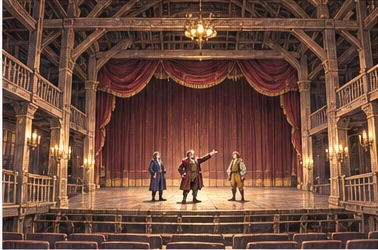
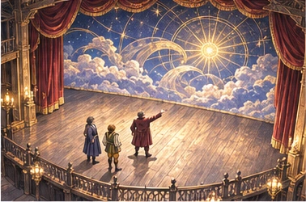

장면 02 / 28
Vorspiel auf dem Theater극장 서막
[나레이션: 이야기 밖에서 인물의 마음까지 알려 주는 서술자]
이번 장은 파우스트가 직접 등장하기 전, 공연을 준비하는 세 사람의 대화다. 지배인은 극장을 운영하고, 시인은 이야기를 쓰며, 희극 배우는 연기를 통해 관객을 웃긴다. 세 사람은 같은 공연을 준비하지만 무엇이 가장 중요한지는 다르게 생각한다.

[나레이션: 이야기 밖에서 인물의 마음까지 알려 주는 서술자]
공연을 앞두고 세 사람이 무대에 모였다. 극장을 맡아 운영하는 지배인, 이야기를 쓰는 시인, 관객을 웃기는 희극 배우였다.
지배인은 두 사람을 번갈아 보았다. 그는 좋은 작품도 필요했지만, 사람들이 표를 사서 극장에 들어오는 일도 중요했다. 공연을 계속하려면 관객의 마음을 얻어야 했기 때문이다.

[나레이션: 이야기 밖에서 인물의 마음까지 알려 주는 서술자]
희극 배우는 시인의 열정을 꺾으려 하지 않았다. 오히려 그 힘을 사람들의 삶에 써 보자고 권했다. 만나고 좋아하다가 어려움을 겪는 과정만으로도 이야기는 자랄 수 있었다.
그는 인생을 설명하는 큰 이론부터 찾을 필요는 없다고 생각했다. 사람들이 살아가며 겪는 일 속에 웃음도 슬픔도 이미 들어 있었다. 문제는 그것을 어떻게 보여 주느냐였다.

[나레이션: 이야기 밖에서 인물의 마음까지 알려 주는 서술자]
젊은 관객 이야기를 들은 시인은 자신의 젊은 날을 떠올렸다. 그때는 모르는 것이 많았지만, 그래서 세상이 더 궁금했다. 작은 경험 하나도 새로운 글의 시작이 되었다.
그는 그 시절을 돌려 달라고 말했다. 시간 자체를 되돌릴 수 없다는 사실은 알고 있었다. 그래도 무엇이든 처음 만나는 듯 바라보던 마음은 다시 얻고 싶었다.

[나레이션: 이야기 밖에서 인물의 마음까지 알려 주는 서술자]
지배인은 시인이라면 자신의 상상력을 실제 작품으로 만들어 보라고 요구했다. 오늘 할 수 있는 일을 내일로 미루지 말자는 것이었다.
앞서 말한 독한 음료는 여기서 공연의 재미와 강한 인상을 빗댄 표현으로 읽을 수 있다. 지배인이 정말 술을 만들라고 시키는 장면으로 볼 필요는 없다. 그가 원하는 것은 관객을 확실히 끌어당길 공연이었다.
독일어 원문 · 한국어 번역 펼치기
Der Worte sind genug gewechselt,
Laßt mich auch endlich Taten sehn!
Indes ihr Komplimente drechselt,
Kann etwas Nützliches geschehn.
Was hilft es, viel von Stimmung reden?
Dem Zaudernden erscheint sie nie.
Gebt ihr euch einmal für Poeten,
So kommandiert die Poesie.
말은 충분히 주고받았으니 이제 행동을 보여 주시오!
여러분이 서로 듣기 좋은 말만 다듬는 동안에도 쓸모 있는 일은 할 수 있소.
기분을 두고 길게 말한들 무슨 소용이오? 망설이는 사람에게는 영감이 찾아오지 않소.
스스로 시인이라고 나섰다면 시를 부려 보시오.

[나레이션: 이야기 밖에서 인물의 마음까지 알려 주는 서술자]
무대를 넓게 바라보자 작은 나무 바닥이 전과 다르게 보였다. 배경 그림과 장치, 빛을 이용하면 이곳을 물가나 바위산처럼 보이게 할 수 있었다. 지배인은 그 가능성을 마음껏 써 보라고 말했다.
마지막으로 그는 하늘에서 세상을 거쳐 지옥까지 가 보자고 했다. 세 사람이 당장 그 길을 떠난다는 뜻은 아니었다. 앞으로 펼쳐질 연극이 인간의 삶뿐 아니라 더 큰 세계까지 다루리라는 예고였다.
좋은 작품을 지키려는 마음과 관객을 즐겁게 하려는 마음은 아직 완전히 같아지지 않았다. 그래도 이제 그 차이를 안 채 하나의 무대를 준비할 차례였다.
독일어 원문 · 한국어 번역 펼치기
Euch ist bekannt, was wir bedürfen,
Wir wollen stark Getränke schlürfen;
Nun braut mir unverzüglich dran!
Was heute nicht geschieht, ist morgen nicht getan,
Und keinen Tag soll man verpassen,
Das Mögliche soll der Entschluß
Beherzt sogleich beim Schopfe fassen,
Er will es dann nicht fahren lassen
Und wirket weiter, weil er muß.
Ihr wißt, auf unsern deutschen Bühnen
Probiert ein jeder, was er mag;
Drum schonet mir an diesem Tag
Prospekte nicht und nicht Maschinen.
Gebraucht das groß, und kleine Himmelslicht,
Die Sterne dürfet ihr verschwenden;
An Wasser, Feuer, Felsenwänden,
An Tier und Vögeln fehlt es nicht.
우리에게 무엇이 필요한지 알지 않소.
우리는 독한 음료를 들이켜고 싶으니 지체 말고 만들어 주시오!
오늘 이루지 않은 일은 내일도 이루어지지 않소. 하루도 흘려보내서는 안 되오.
결심은 가능한 일을 당장 대담하게 움켜쥐어야 하오.
그러고 나서는 놓아주지 않고, 해야 하기에 계속 나아가는 것이지.
독일 무대에서는 저마다 원하는 것을 시험한다는 걸 알 거요.
그러니 오늘은 배경막도 무대 장치도 아끼지 마시오.
큰 천체와 작은 천체의 빛을 쓰고 별들도 마음껏 뿌리시오.
물과 불, 바위 벽도, 짐승과 새도 부족하지 않으니.
So schreitet in dem engen Bretterhaus
Den ganzen Kreis der Schöpfung aus,
Und wandelt mit bedächt’ger Schnelle
Vom Himmel durch die Welt zur Hölle.
이 비좁은 판자 극장에서 창조 세계의 온 둘레를 밟아 나가시오.
그리고 신중하되 빠르게, 하늘에서 세상을 거쳐 지옥까지 걸어가시오.